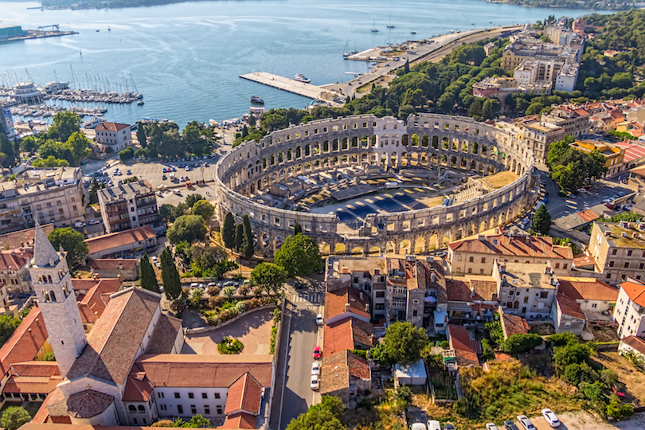
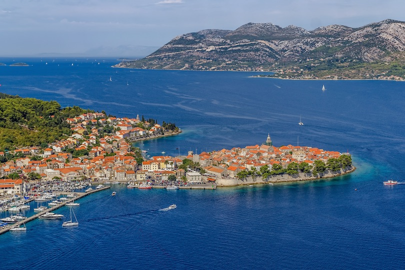

üíñ Dobrodo≈°li u hrvatsku
Split
Nicknamed the “Mediterranean Flower,” Croatia’s second-largest city, Split, is located on a peninsula off the Dalmatian Coast

Rovinj
Located on Croatia’s Istrian peninsula in the Adriatic Sea, Rovinj is an archipelago of 20 islands with its Old Town set on a small peninsula

Pula
Located at the southern tip of the Istria peninsula in the Adriatic Sea, Pula is a popular destination that has been attracting tourists as far back as ancient Roman times
Zadar
A three thousand-year old city situated on a beautiful coastline rich in history is sure to draw tourists. Such a city is Zadar, located on Croatia’s northern Dalmatian Coast

Korcula
Best known as the alleged birthplace of the famous merchant traveler, Marco Polo, Korcula is a 30-mile (50 km) island located off Croatia’s Adriatic Coast
Krka National Park
Located in Central Dalmatia of Croatia, the Krka National Park is a protected area of spectacular natural scenery, wildlife and historic sites